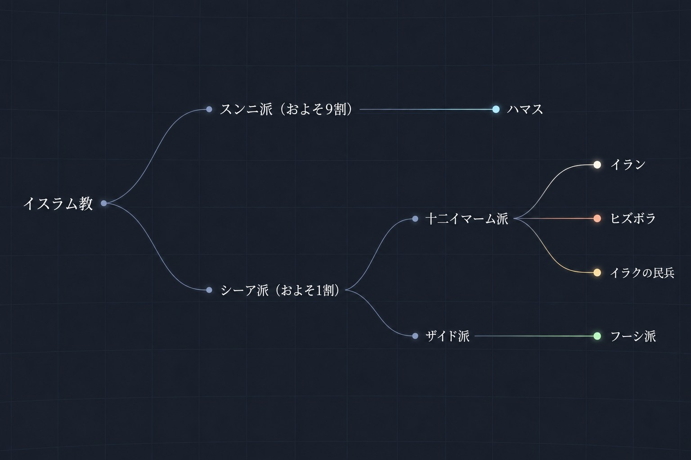
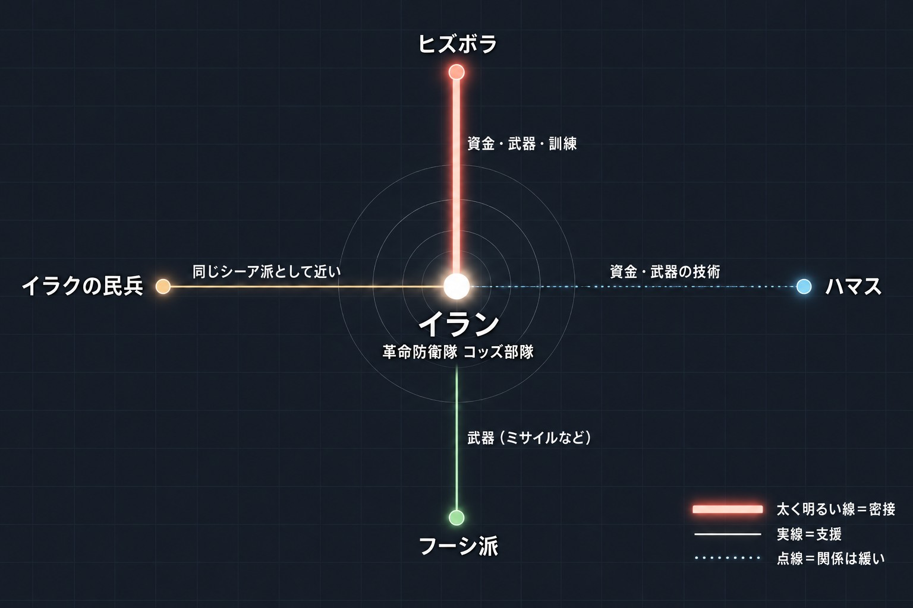
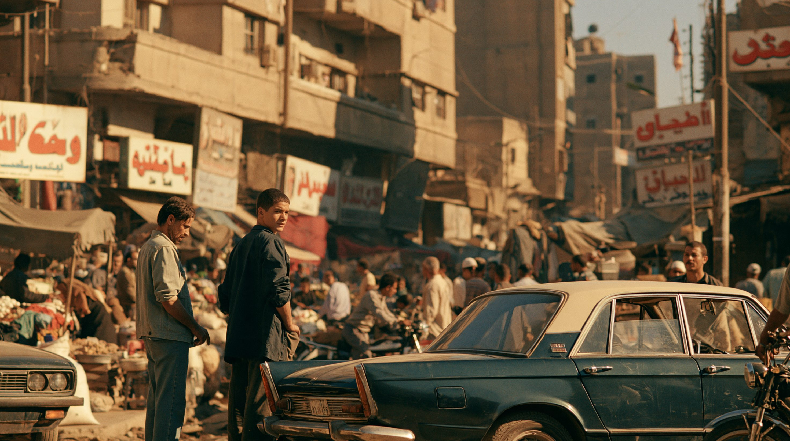
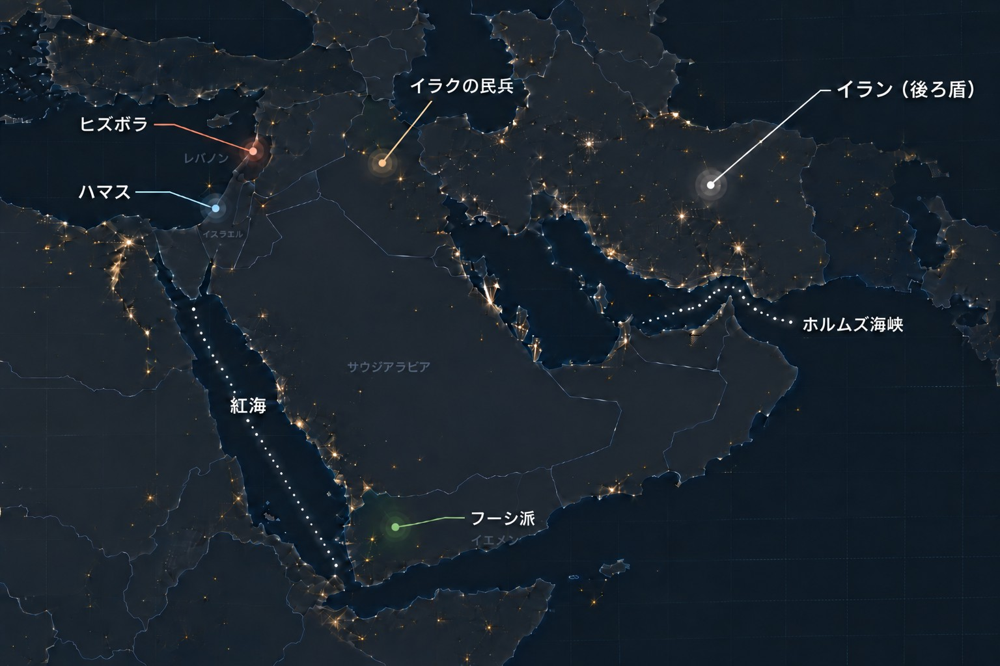
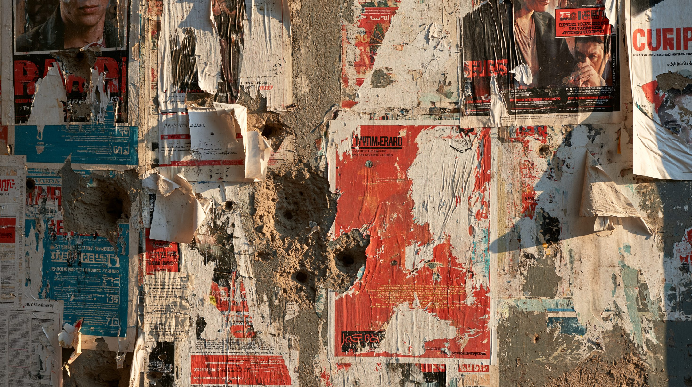
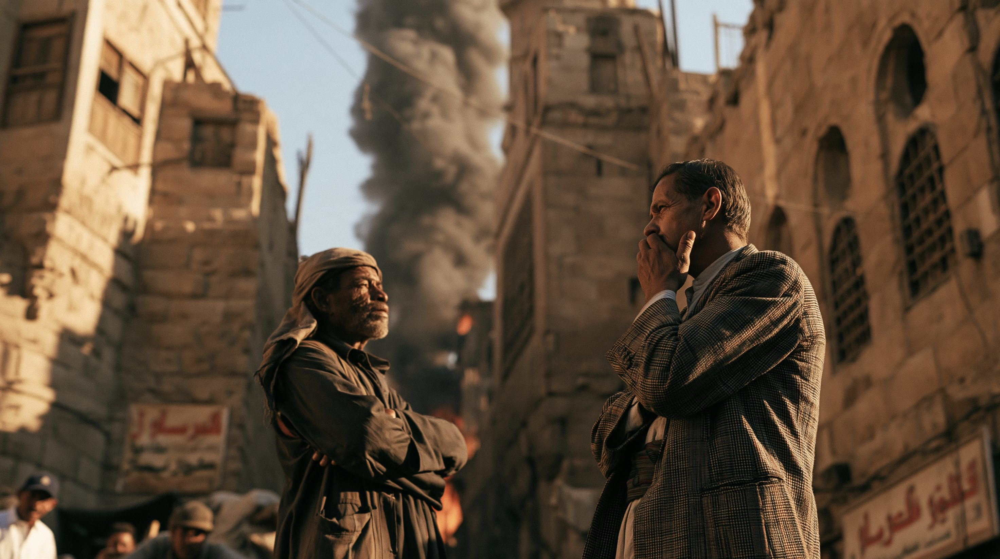
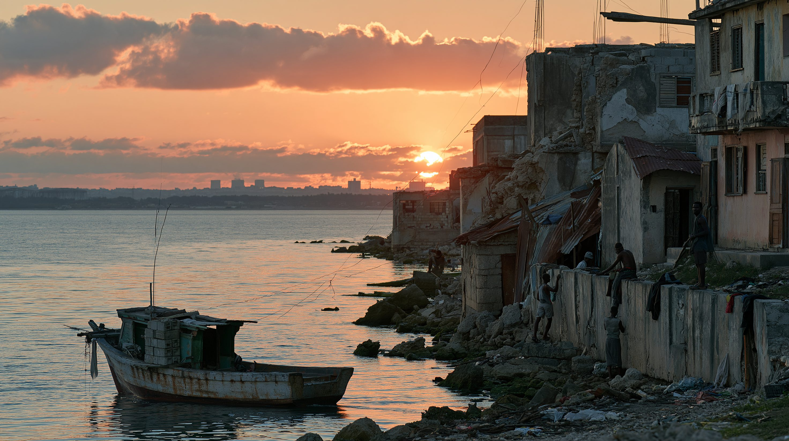

01論点 ―「イランの仲間」は、全員が同じではない
中東のニュースでは、ハマス、ヒズボラ、フーシ派といった組織が「イラン支援組織」と呼ばれる。どれも同じ仲間のように聞こえるが、活動する国も、信じる宗派も、イランとのつながりの強さも、組織ごとに違う。
2026年2月28日、アメリカとイスラエルがイランを攻撃してイラン戦争が始まると、これらの組織が次々に参戦した。戦争のニュースを読むには、まず「誰がどの組織で、イランとどうつながっているのか」を知る必要がある。この記事では、そのために必要な3つの前提から説明する。


| 組織 | 拠点 | 宗派 | イランとの関係 | 2026年10月時点の動き |
|---|---|---|---|---|
| ヒズボラ | レバノン | シーア派（十二イマーム派） | 最も密接。1982年の結成時から革命防衛隊が訓練し、資金の大半をイランに頼ってきたとされる。 | 3月初めに参戦し、4月16日に停戦した。ただし停戦後もイスラエル軍の攻撃が続く。武装解除は拒み続けており、レバノン政府も強制できていない。 |
| ハマス | ガザ地区（パレスチナ） | スンニ派 | 協力関係だが、宗派が違い、独自に動く面が強い。2012年に関係が悪化した。 | 2025年10月の停戦から1年。7月に武装解除の段階案の受け入れを条件付きで表明したが、イスラエルの撤退との順序で止まっている。 |
| フーシ派 | イエメン北部 | シーア派の一派（ザイド派） | 主にミサイルなどの武器の提供を受けていると言われている。主な目的はイエメン国内の権力と、隣国サウジアラビアとの対立。 | 7月にサウジアラビアへのミサイル攻撃を再開し、「海上封鎖」を宣言した。10月にはサウジアラビアの空港を攻撃し、リヤドの空港で多数の死傷者が出た。 |
| イラクの民兵組織 | イラク | 主にシーア派 | 同じシーア派として近い。イラク政府の公式な治安機関に組み込まれた組織もある。 | 戦争の開始後にアメリカ拠点を攻撃した。アメリカ軍の撤退完了後、カタイブ・ヒズボラは10月に軍事活動の停止を表明したが、武器はまだ手放していない。 |
後ろ盾のイランは、シーア派（十二イマーム派）が国教の国で、支援を担うのは革命防衛隊の「コッズ部隊」。各組織の動きは、2026年10月14日までに確認できた報道にもとづく。

02タイムライン ― 組織が生まれ、戦争に巻き込まれるまで

王政が倒れ、イスラム教の指導者が国を治める「イスラム共和国」が生まれた。新しい政権は、革命の考え方を国外へ広げることを掲げた。
イスラエル軍がレバノンに侵攻したのをきっかけに、イランの革命防衛隊の支援でヒズボラが生まれた。
パレスチナ人がイスラエルの占領に抗議した大規模な蜂起をきっかけに、ハマスが結成された。スンニ派のムスリム同胞団というグループから生まれた組織で、イランとのつながりは後からできた。
シリアの内戦で、イランはアサド政権を支えた。ハマスは政権に弾圧される市民の側に立ち、シリアにあった本部をカタールに移した。関係は2010年代後半までに戻ったが、以前ほど近くはならなかった。
イエメンでは、北部の山岳地帯から出てきたフーシ派が、首都サヌアを制圧した。翌2015年3月にはサウジアラビア主導の軍事介入が始まった。2014年にはイラクでも、「イスラム国」に対抗するために多くの民兵組織が集まった。
ハマスがイスラエルを攻撃し、ガザ戦争が始まった。これを機に、ヒズボラ、フーシ派、イラクの民兵組織も各地でイスラエルやアメリカを攻撃し、戦いが広がった。
9月にヒズボラの指導者ナスララ師が殺害された。12月にはシリアのアサド政権が倒れ、イランからヒズボラへ武器を運ぶ陸路を使いにくくなった。
アメリカの仲介で、ガザの停戦の第一段階が始まった。
アメリカとイスラエルがイランを攻撃し、最高指導者ハメネイ師が死亡した。後任には息子のモジタバ師が選ばれた。3月初めにヒズボラが参戦し、3月28日にはフーシ派がイスラエルへの攻撃を再開した。イラクの民兵組織も、アメリカの拠点を攻撃した。
4月にイランとアメリカが停戦に合意し、レバノンでも4月16日に停戦が成立した。6月にはイランとアメリカが合意文書に署名したが、7月にホルムズ海峡での船舶攻撃をきっかけに崩れた。7月13日にフーシ派がサウジアラビアへの攻撃を再開し、20日には「海上封鎖」を宣言した。
イランとアメリカの間に機能する停戦はなく、アメリカによるイランの港の封鎖が続いている。交渉は、直接や仲介者を通じた接触があるものの、停滞している。10月8日、トランプ大統領は、11月3日の中間選挙前にはイランへの攻撃を再開しないと述べた。フーシ派は10月上旬、サウジアラビアの空港を攻撃した。リヤドの空港の死者は、サウジ当局の発表では3人だったが、AP通信は少なくとも13人と伝えている。イラクでは、カタイブ・ヒズボラが軍事活動の停止を表明した。ガザでは、武装解除をめぐる交渉が行き詰まっている。

035つの視点 ― 同じ組織が、立場によって違って見える
同じ組織でも、見る側の立場によって「仲間」「脅威」「守り手」とまったく違う姿になる。組織を取り巻く5つの立場を整理する。

04データ・統計
イランの支援は秘密裏に行われるため、正確な数字はない。公表されているのは、アメリカやイスラエルの当局者が述べた推計に限られ、いずれも数年前のものだ。
上の額は出典ごとに時期も範囲も異なる。比べるのではなく、「ヒズボラへの支援が突出して大きい」という傾向を見るための目安として読んでほしい。フーシ派への支援額には、信頼できる公表値がない。
| 組織 | 主な支援の中身 | 読み取れること |
|---|---|---|
| ヒズボラ | 資金、武器、戦闘の訓練 | アメリカ政府は、イランの支援が組織の年間予算の大半を占めると説明してきた。イランへの依存が最も大きい。 |
| ハマス | 資金、武器の技術 | 2012年の関係悪化の際、イランが資金援助を止めたと報じられた。関係は2010年代後半までに修復された。 |
| フーシ派 | 弾道ミサイルなどの武器 | ミサイルが渡っているとアメリカなどが指摘している。資金より武器や技術が中心と言われている。 |
05深掘り ―「ひとまとめ」で見ると、何を見誤るか
※ ここから先は、ここまでの事実にもとづく筆者個人の見解です。
4つの組織は、同じ「イランの仲間」というより、イランという共通の後ろ盾を持つ別々の組織だ。ニュースを読むときは、「どの組織の話か」「その組織はイランとどのくらい近いか」をまず確かめると、出来事の意味がつかみやすくなる。
